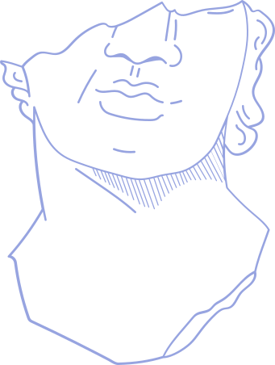

<div class="relative">
        <ul class="text-3xl lg:text-6xl leading-relaxed space-y-6 lg:space-y-12 tracking-wide">
                {% assign cities = site.data.cities %}
                {% for city in cities %}
                <li>
                        <a class="underline underline-offset-8 decoration-2"
                                href="/cities/{{ city.city | to_url_friendly }}">{{
                                city.city }}</a> /
                </li>
                {% endfor %}
        </ul>


        <div class="flex justify-center lg:justify-end mx-auto lg:sticky lg:bottom-0 pointer-events-none">
                
        </div>


</div>
